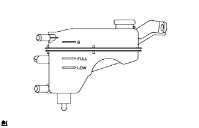
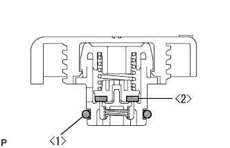
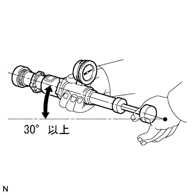

Cooling System (2AZ-FE) Function Inspection |
| 1. Inspect for Coolant Leaks |
 |
Fill the radiator with coolant and install a radiator cap tester.
Warm up the engine.
118kPa{1.2kgf/cm2Pump it to } and check that the pressure does not drop.
| 2. Coolant Level Inspection |
 |
When the engine is cold, check that the coolant level in the reserve tank is between FULL and LOW.
| 3. Coolant Inspection |
Remove the reserve tank cap.
Check that there are no excessive deposits of rust or scale around the reserve tank cap and water inlet.
Install the reserve tank cap.
| 4. Reserve Tank Cap Sub-assembly Inspection |
 |
Wash off any scale and foreign matter adhering to the packing <1> with water.
Perform a visual inspection.
Check that the resin and rubber parts are not deformed, cracked or damaged.
Check that the packing <1> is not swollen.
 |
Perform a function inspection.
Wet the packings <1> and <2> with coolant.
Using a radiator cap tester, measure the maximum valve opening pressure while pumping several times.
| Standard | 93.3 to 122.7 kPa {0.95 to 1.25 kgf/cm2} |
| Limit | 78.5 kPa {0.8 kgf/cm2} |
| Measurement Condition | Pumping speed: 1 times within 1 seconds |